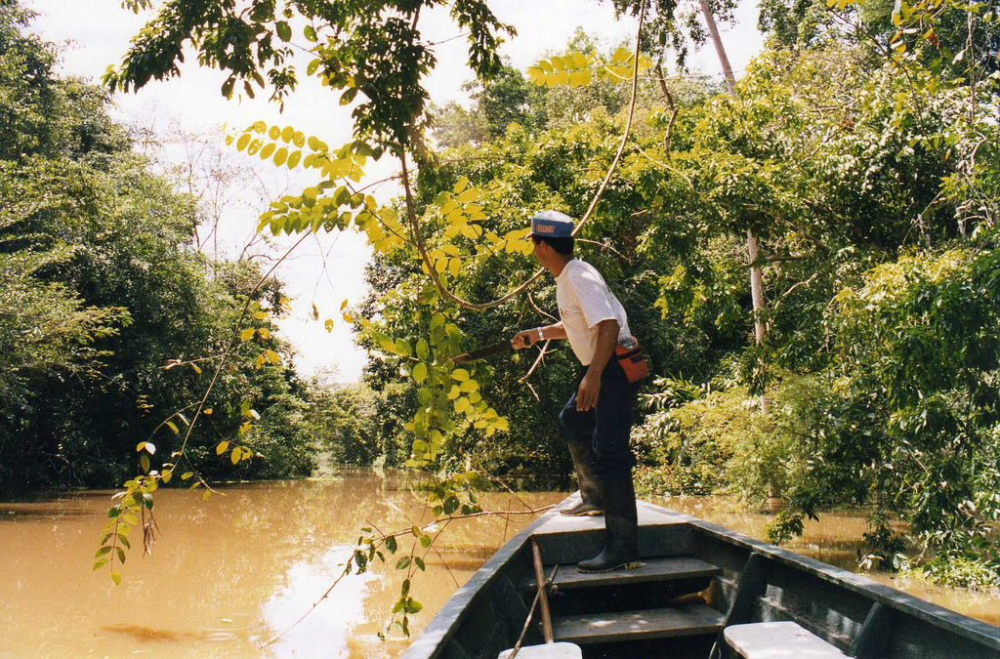
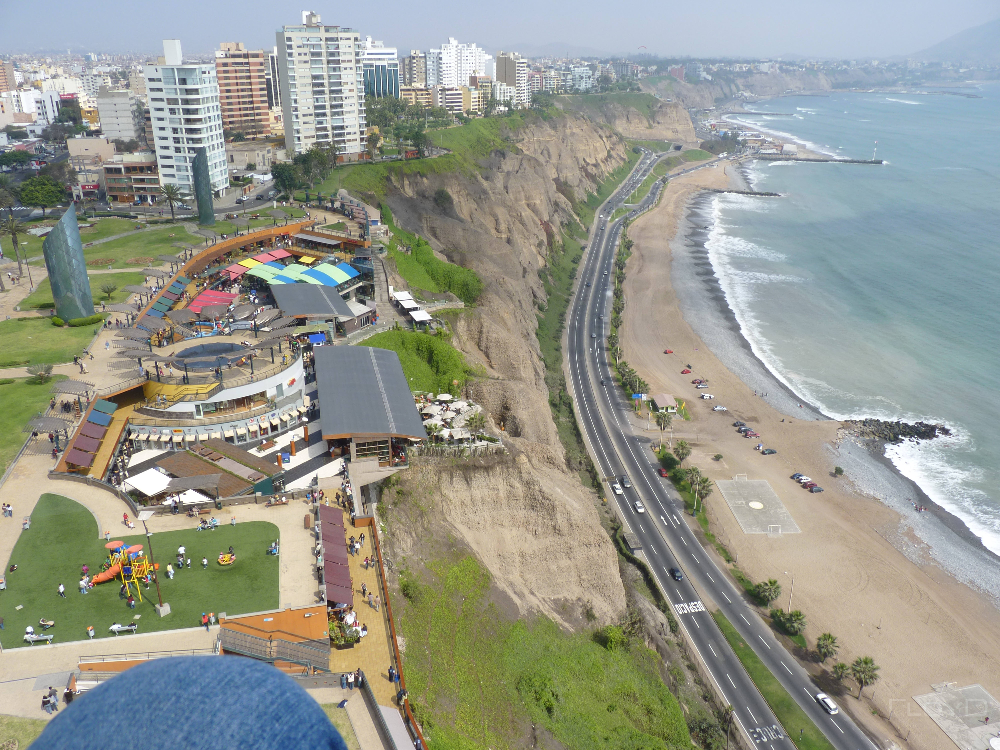

Iceland
Iceland Norway
Norway Peru
Peru Greece
Greece Australia
Australia South Africa
South AfricaWelcome to Peru
Peru is the third largest country in South America, after Brazil and Argentina. It is made up of a variety of landscapes, from mountains and beaches to deserts and rain forests. The Amazon which is the world's largest rain forest, encompasses nearly half of Peru. The second highest mountain range in the world runs through Peru. Along Peru's west coast is a narrow strip of desert 1,555 miles (2,500 kilometers) long. The most attractive places to visit in Peru are:
Machu Picchu Sacred Valley Iquitos Nazca Desert Lima
Machu Picchu

Inca city of Machu Picchu is the long-anticipated highpoint of their trip for many visitors. It is a spectacular location, it’s the continents best-known archaeological site. This awe-inspiring ancient city was never discovered by the conquering Spaniards and was almost forgotten until the early part of the 20th century. The site succeeds in retaining an air of grandeur and mystery.
Sacred Valley

Río Urubamba Valley, known as El Valle Sagrado (The Sacred Valley), is roughly 15km north of Cuzco as the condor flies, via a narrow road of hairpin turns. This has long been the home of attractive foreign towns and isolated weaving villages. The main attractions in the area are the markets and the lofty Inca citadels of Pisac and Ollantaytambo, however the valley is also packed with adrenaline activities from rafting to rock climbing.
Iquitos
Iquitos is the world’s largest city which can’t be reached by road. It’s a prosperous, vibrant jungle metropolis swarming with the usual, inexplicably addictive Amazonian variances. The jungle encroaches beyond town. The mud huts circulate the magnificent tiled mansions; small dugout canoes strand the river together with colossal cruise ships. Iquitos is the place to be for the greater adventure of a boat trip down the Amazon.
Nazca Desert

The Nazca Desert is home of the Nazca Lines. Which is a puzzle which archeologist are still looking to solve it is a mystery dating back to 200BC. They are thousands of geoglyphs located in an arid coastal area of Peru which depict various creatures and plantss yet no one knows exactly who made these and for what purpose. Definitely a mystery to take your mind off worries and truly escape.
Lima
Lima is the capital city of Peru and it is the larget city. Lima is a mixture of modern city with a dash of colonial architecture. It consists of many museums to really get you lost in the history of its Spanish rule. Also gourmet lovers will not be disappointed with the cuisines in this area it has a huge variety of ingredients from the coast, mountain and Amazon regions.